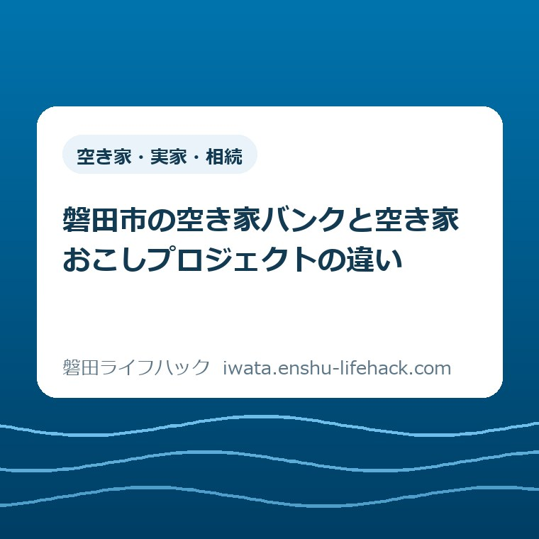

空き家・実家・相続
磐田市の空き家バンクと空き家おこしプロジェクトの違い

この記事の要点
Q. 磐田市の空き家バンクと空き家おこしプロジェクトは、どう違うのですか？
A. 入口が逆です。空き家バンクは「不動産関係事業者からの情報を掲載したもの」で、載せるのは所有者ではなく事業者。空き家おこしプロジェクトは市の側から所有者に働きかけ、契約した事業者が無償で査定します。市は契約上、平均1〜3戸／週の査定を想定しています（2026年8月29日確認）。
導入——「空き家バンクに載せたい」と言われて、まず確認すること
磐田市で親から引き継いだ家をどうするか考え始めた方から、「空き家バンクに載せればいいんですよね」と聞かれることがあります。磐田市には空き家バンクがあり、空き家おこしプロジェクトもあります。名前が似ていて、市のサイトの同じ「空き家」の下に並んでいるので、同じ窓口の別名だと受け取られやすい。
先に答えを書きます。二つの違いは、動き出す向きです。磐田市空き家バンクの登録要件には「不動産関係事業者が所有、もしくは媒介契約を締結しているもの」とあり、登録申請をするのは事業者です（磐田市「空き家バンク」ページ更新日2026年8月7日、2026年8月29日確認）。所有者が申込用紙を書いて市に出せば載る、という形ではありません。
空き家おこしプロジェクトは、その逆です。市が自治会などから「市から働きかけてほしい空き家」の情報を集め、市から所有者へ通知し、契約した事業者が査定を提案してマッチングまで支援する流れになっています。所有者が動くのを待つのではなく、市の側から声をかける取り組みです。
そして、こちらの査定は無償です。磐田市は契約内容として「空き家の査定等は無償（想定 平均1～3戸／週）」と公表しています（磐田市「空き家おこしプロジェクト」ページ更新日2026年8月26日、2026年8月29日確認）。ここが、二つを分ける実務上のいちばん大きな差です。
私は磐田市で不動産業をしています。空き家の相談で最初に詰まるのは、家の値段ではなく「どこに持っていく話なのか」が分からない段階です。この記事は、磐田市が公表している内容を、持ち主の側の段取りに置き換えて並べ直したものです。手続きの一覧そのものは、当サイトの磐田市の空き家の相談をまとめたページにあります。

まず、公式資料から事実を整理する——磐田市空き家バンク
磐田市空き家バンクは、市のサイト上に空き家の物件情報を掲載するページです。冒頭に「磐田市空き家バンクは、不動産関係事業者からの情報を掲載したものです。購入を希望される方は、直接不動産関係事業者にご相談ください。市は、購入に関して発生したトラブルに対しては、いかなる場合でも一切の責任を負いません」と明記されています。
この三文に、仕組みの性格がほぼ全部入っています。情報の出どころは事業者、相談先も事業者、市は掲載の場を用意しているだけで取引の責任は負わない。市が売主と買主の間に立つ仕組みではない、ということです。
掲載できる物件の条件も決まっています。磐田市内に所在する一戸建ての住宅であること、住宅の品質確保の促進等に関する法律第2条第2項に規定する新築住宅でないこと、現に居住せず居住する予定もない空き家であること、そして不動産関係事業者が所有しているか媒介契約を締結しているものであること。この四つ目が、所有者が自分で登録できない理由です。
対象外も示されています。居宅以外の建物、一戸建て以外の建物、差し押さえを受けている物件、暴力団員等が所有する物件は登録できません。マンションやアパートは、この枠に入りません。
登録申請には様式第1号「空き家バンク情報登録申請書兼同意書」と様式第2号「空き家バンク情報登録カード」のほか、所有者が分かる資料、媒介契約書の写し、広告のPDFデータ、外観写真データが必要です。電子申請か、建築住宅課への持ち込みで受け付けられています。
2026年8月29日に確認した時点で、磐田市空き家バンクに掲載されていた物件は6件でした。価格は8,800,000円から23,300,000円まで、所在は岩井、城之崎、東新町、合代島、海老島などです。掲載は入れ替わるので、実際に見るときは必ず最新のページで数えてください。
そしてもう一つ、所有者にとって重要な導線がこのページにあります。「市内に空き家を所有する方へ」という見出しで、空き家バンクに情報を登録している不動産関係事業者等の紹介を希望する場合、市は所有者が希望する方法で連絡を取る、と案内されています。専用フォームから申し込む形です。つまり所有者は、市を経由して事業者を紹介してもらうことができます。
空き家おこしプロジェクトは、市の側から声をかける取り組み
磐田市の空き家おこしプロジェクトは、2026年8月26日にページが更新された、動きの新しい取り組みです。市はこの活動の目的を、空き家対策を知ってもらうこと、一緒に進める共創相手を見つけること、空き家の有効活用を促進させることと説明しています。
流れは四段階です。自治会などから「市から働きかけてほしい空き家」の情報を集める。その所有者へ市から通知する。契約した事業者が査定を提案する。そのうえでマッチングを支援する。所有者が窓口へ出向くのを待たず、市の側から順番に声をかけていく設計になっています。
公表されている数字で最も具体的なのが、査定の条件です。「空き家の査定等は無償（想定 平均1～3戸／週）」。この一行は、市が事業者と結んだ契約の内容として書かれています。所有者の側から見れば、費用をかけずに自分の家の値段を一度知ることができる、という意味になります。
ここは慎重に読む必要があります。1～3戸／週という数字は「想定」であって、実際に査定した戸数の実績ではありません。同じ表記は令和6年度の契約内容にも記載されており、年度ごとの実績の違いを示すものでもない。私が確認した範囲では、実際の査定戸数やマッチング成立件数は公表されていませんでした。
契約締結事業者は、令和7年度が3者で、株式会社カチタス（群馬県桐生市）、合同会社まごころ不動産（磐田市）、マークスライフ株式会社（東京都）。契約期間は令和7年7月1日から令和8年3月31日までで、延長の場合があるとされています。令和6年度は2者で、株式会社カチタスと株式会社マストレ、契約期間は令和6年10月29日から令和7年3月31日まででした。
年度で1者増え、契約期間も約5か月から約9か月へ延びています。事業者は市のプロポーザルで選定されており、令和7年度の選定結果も市のサイトで公表されています。地元の合同会社が1者入っている点は、遠方の買取業者だけで回す形にしていないという意味で、私は評価しています。
窓口は、磐田市 建設部 建築住宅課 住宅管理グループ（電話0538-37-4851、ファクス0538-33-2050）です。所在地は磐田市国府台3-1の西庁舎2階、受付時間は午前8時30分から午後5時15分。空き家バンクも危険空き家の助成も、この同じグループが担当しています。電話を一本かけるなら、ここが起点になります。
二つを並べる——誰が動き出すか、査定はあるか、市の責任はどこまでか
磐田市空き家バンクと空き家おこしプロジェクトを、持ち主の側から三つの軸で並べると違いがはっきりします。軸は、誰が動き出すか、査定があるか、市が何の責任を負うか、の三つです。
動き出すのは、空き家バンクでは不動産関係事業者です。事業者が先に所有または媒介契約を持っていて、その情報を市のページに載せます。空き家おこしプロジェクトでは市が先に動き、自治会からの情報をもとに所有者へ通知します。事業者が入口に立つのか、市が入口に立つのか、という違いです。
査定については、空き家バンクのページに記述がありません。載っているのは売出価格で、そこに至るまでの評価は事業者と所有者の間で済んでいます。空き家おこしプロジェクトは逆に査定が中核で、しかも無償だと明記されています。値段を知る前の段階に対応しているのは、おこしプロジェクトのほうです。
市の責任は、空き家バンクについては「いかなる場合でも一切の責任を負いません」と明示されています。一方、空き家おこしプロジェクトのページに、個別の取引の責任に関する記述はありません。市が担っているのは声をかけるところまでで、契約は所有者と事業者の間の話になります。
持ち主として使い分けるなら、こうなります。すでに不動産事業者に依頼している、または依頼する相手が決まっているなら、その事業者にバンク掲載を相談する。まだ誰にも頼んでいなくて、値段の見当すら付いていないなら、建築住宅課に連絡して無償査定の対象になるかを聞く。順番を逆にすると、バンクのページを見ながら「自分は載せられない」で止まります。
言い切っておきます。磐田市において、空き家バンクは所有者の入口ではありません。事業者の出口です。所有者の入口は、空き家おこしプロジェクトと、バンクのページ下部にある「市内に空き家を所有する方へ」の紹介フォーム、この二つです。ここさえ押さえておけば、市のページで迷う時間はかなり減ります。

数字で見る——1,880戸と、掲載6件
磐田市空家等対策計画は、2022年度（令和4年度）から2026年度（令和8年度）までの5年間を対象にした計画です（ページ更新日2026年3月5日）。この計画に、磐田市の空き家の規模を示す数字が二つ載っています。
一つは戸建て住宅の空き家数で、令和2年度時点が1,880戸、令和8年度の目標が「2,000戸未満におさえる」。もう一つは管理不全空き家の改善割合で、令和2年度時点が39パーセント、令和8年度の目標が50パーセント以上です。
ここで私の商売の癖が出ます。数字を見たら、必ず割り戻して自分の感覚に置き換える。磐田市の世帯数は72,421世帯（令和8年7月末現在）ですから、1,880戸を割ると約2.6パーセント、およそ38世帯に1戸が戸建ての空き家という計算になります。町内会の一区画に1軒か2軒。市内を車で回っているときの体感と、だいたい合います。
次に、その1,880戸に対して、2026年8月29日時点で空き家バンクに載っていたのは6件でした。ざっくり0.3パーセントです。調査時点が令和2年度と2026年8月で違うので厳密な比率ではありませんが、桁として「1,000戸に3戸しか載っていない」という景色は動きません。
この数字は、空き家バンクの出来が悪いという話ではないと私は考えています。むしろ逆で、バンクは事業者が媒介契約を取れた物件だけが載る場所なので、載っている時点でかなり進んだ案件です。1,880戸の大半は、まだ誰にも相談されていない段階にある。市が空き家おこしプロジェクトで「働きかける」側に回ったのは、そこを見ているからでしょう。
参考までに、磐田市の人口は163,224人（令和8年7月末現在）で、令和8年4月末の163,593人から4か月で369人減っています。面積は163.34平方キロメートル。戸建ての空き家1,880戸を面積で割ると1平方キロメートルあたり11.5戸ほどで、市内をひと回りすれば何軒か目に入る密度です。
ただし、この1,880戸が今どうなっているかは、私には分かりません。令和2年度の数字が公表値としてページに載っているだけで、令和7年度・令和8年度の実績は確認できませんでした。増えたのか減ったのか、断定できる材料は手元にありません。ここは未確認のまま書いておきます。
磐田市の空き家の入口は、この二つだけではない
磐田市のサイトの「空き家」のページからは、2026年8月29日時点で10のページがリンクされています。空き家バンクと空き家おこしプロジェクトは、そのうちの二つにすぎません。残りを知らないまま二つだけを比べると、自分に合う入口を取りこぼします。
台風や地震で空き家が傷んだときは、売却や解体を決める前に写真を残します。日常的に人が住んでいない家は被災証明書の対象で、申請は災害発生日から6か月以内です。詳しい順番は、磐田市の空き家の被災証明書を整理した記事で確認できます。
解体を考えているなら、磐田市危険空き家等除却事業費補助金があります。補助は対象工事費の2分の1以内で、限度額は50万円。対象は空家等対策特別措置法に基づく「特定空家」、または昭和56年5月31日以前に建築された住宅の「危険空き家」で、市が現地調査で判定します。市税の滞納がないこと、所有権以外の権利が設定されていないか全ての権利者の同意があることも要件です（ページ更新日2026年5月25日）。
この条件は、思っているより狭い。昭和56年5月31日という日付は建物の古さの線引きで、そこに使用実態の条件が重なります。親が数年前まで住んでいた家は、傷んでいても対象から外れる可能性があります。解体費用の見積もりを取る前に、まず担当課へ該当するかを聞くほうが早い。耐震や解体の全体像は、当サイトの磐田市で耐震・解体を考えるページにまとめています。
買う側への補助もあります。既存住宅取得等事業費補助金は、市内の既存住宅を取得してリフォームし居住する方が対象で、若者世帯・子育て世帯が市外から転居する場合の限度額は150万円、市内転居等は100万円、それ以外の世帯は50万円です（ページ更新日2026年7月9日）。売る側から見れば、この補助があることが買い手を動かす材料になります。
管理だけ先に何とかしたいなら、市が協定を結んでいる相手があります。磐田市シルバー人材センターとは平成28年4月20日に「空き家等の適正な管理の推進に関する協定」を締結していて、見回り作業は報告書付きで1回2,240円です。除草作業や植木作業もあります。遠方に住んでいて年に数回しか帰れない持ち主には、現実的な選択肢です。
協定の相手は他にもあります。株式会社カチタスとは令和7年3月13日、特定非営利活動法人 遠州空き家対策ネットワークとは令和5年12月26日に「磐田市における空き家問題の予防と解消及び空き家の有効活用の推進に関する協定」を締結。静岡県土地家屋調査士会とは令和5年8月29日、静岡県司法書士会とは令和5年7月7日に、空家等および所有者不明土地の予防と解消に関する協定を結んでいます。相続登記の促進や表示登記の相談につながる相手が、令和5年から令和7年にかけて積み増されています。
専門家にまとめて聞きたいときは、相談会があります。市の「空き家に関する相談会等」のページは「住まいの終活を始めるためのセミナーや相談会等や支援策をご案内します」として、2026年8月8日の土曜午前9時30分から11時30分に総合健康福祉会館（iプラザ）で開かれたセミナーと個別相談会を案内していました。相談員は宅地建物取引士、税理士、司法書士、不動産鑑定士などの専門家です。令和6年度の実績として、8月24日の回は18組（うち個別相談13組）、9月20日の回は37名、10月12日の回は10組と公表されています。
評価——良い点と、注文したい点
良い点は三つあります。①空き家バンクを事業者経由に限ったことで、掲載物件に必ず責任を持つ宅地建物取引業者がいる状態になっています。買う側から見れば、問い合わせ先が最初からはっきりしていて、重要事項説明まで一本の線でつながる。市が間に入って情報だけ流す形より、取引としてはずっと安全です。
②空き家おこしプロジェクトで、市が「待つ」から「働きかける」に回ったことを評価します。しかも査定を無償にした。空き家を持っている方が動けない理由の上位は、いくらになるか分からないことと、不動産屋に連絡したら売る流れになりそうで怖いことです。無償査定は、その両方を下げます。契約期間が令和6年度の約5か月から令和7年度の約9か月へ延びたのも、腰を据えた形に見えます。
③協定の相手が具体的なことも良い点です。買取の会社、地域のNPO、シルバー人材センター、土地家屋調査士会、司法書士会。名前と締結日が出ていて、令和5年から令和7年にかけて増えています。掛け声だけでなく相手を実際に集めるのは、現場から見て手間のかかる仕事です。
その上で、注文したい点も二つあります。①空き家バンクのページの構成が、購入希望者向けから始まっています。所有者向けの「市内に空き家を所有する方へ」という導線はきちんと用意されているのに、冒頭の三文が購入者への注意書きなので、持ち主は「自分の話ではない」と読み飛ばしやすい。導線が無いのではなく、気づきにくい。冒頭に一行あれば済む話だと思います。
②空き家バンクと空き家おこしプロジェクトの関係が、どちらのページにも書かれていません。おこしプロジェクトのページからバンクへのリンクはありますが、二つがどう役割分担しているかの説明はない。名前が似ている二つが同じ階層に並んでいる以上、「こちらは売りに出す場、こちらは売る前に相談する場」という一行の整理が要ると、一事業者としては思います。
対案・結論——所有者が今日できるのは「どちらでもない一歩」
ここまで読んで、「では自分はどちらに連絡すればいいのか」と思われたかもしれません。連絡先はどちらも建築住宅課 住宅管理グループ（0538-37-4851）で同じです。ただ、電話をかける前にやっておくと話が早く進むことがあります。
具体的には三つ。名義が誰になっているか、境界がはっきりしているか、前面道路が建築基準法上の道路か。この三つは、売っても貸しても解体しても必ず聞かれます。査定額を先に出す前に、道路と境界と名義を見る。これは私が自分の仕事で毎回やっている順番です。
名義は、相続が済んでいなければ空き家バンクにも協定事業者にも進めません。境界と道路は、解体費用の見積もりにも売却価格にも直結します。この三つが分かっているだけで、無償査定を受けるときの精度も上がります。詳しい進め方は磐田市の空き家・実家じまい・相続した家のページと磐田市で家を売るページに分けて置いてあります。
そのうえで、無償の査定は受けておいて損がないと私は考えています。査定を受けることと売ることは別の話です。数字を一つ持っておけば、兄弟と話すときも、固定資産税と比べるときも、判断の土台になります。断る自由は最後まで所有者の側にあります。
そして、今日結論を出す必要はありません。売る・貸す・解体する・そのまま持つ。この四つはどれも正解になり得ますし、どれを選んでも名義と境界と道路は必要になります。決めるのを先送りにしても、材料だけは無駄になりません。
確認する順番
- 登記簿で名義を確認する。相続が済んでいなければ、そこから先はどの窓口も進めない。
- 磐田市 建築住宅課 住宅管理グループ（0538-37-4851）に電話し、自分の家が空き家おこしプロジェクトの無償査定の対象になるかを聞く。売却・解体・管理のどれを想定しているかを最初に伝える。
- 売却・賃貸を考えているなら、空き家バンクのページ下部「市内に空き家を所有する方へ」のフォームから、不動産関係事業者の紹介を申し込む。
- 解体を考えているなら、危険空き家等除却事業費補助金の対象になるかを同じ窓口で確認する（対象工事費の2分の1以内・限度額50万円）。市税の滞納がないことも要件になる。
- 判断がつかないなら、市の「空き家に関する相談会等」のページで次回の相談会を確認し、宅地建物取引士・税理士・司法書士・不動産鑑定士にまとめて聞く。
家族で共有するための記録
空き家の話は、持ち主一人で決めきれないことがほとんどです。兄弟が県外にいる、母親がまだ手放したくない、固定資産税を誰が払っているかで温度が違う。だから、調べたことは口頭ではなく紙かデータで残しておくほうがいい。
残す項目は多くなくて構いません。名義人の氏名、登記の日付、前面道路の幅と種別、境界標の有無、直近の固定資産税額、そして市の担当課に電話した日と言われた内容。この6項目をA4一枚にしておくと、家族の誰が窓口へ行っても同じ話ができます。
無償査定を受けたら、その金額と査定日、査定した事業者名も同じ紙に足してください。査定は時期で動きます。半年後に別の話が出てきたとき、いつ誰がいくらと言ったかが残っていると、比べる基準になります。
もう一つ、片付けの見通しも書いておくと役に立ちます。家財が残ったままだと、売却でも解体でも先に進みません。磐田市の粗大ごみは日常の枠と実家じまいの枠が別になっているので、量が多い家は早めに分けて考える必要があります。そのあたりは磐田市の粗大ごみと実家じまいの出し方を整理した記事に書きました。
大石の視点
ここから先は、私が磐田市で不動産の相談を受けてきた立場からの見解です。特定のご家庭の体験談ではなく、意見として読んでください。この記事に使えるだけの一場面が手元の記録になかったので、そこは正直に断っておきます。
市の空き家への向き合い方について、私は良い点を先に数えます。バンクを事業者経由にしたのは正しい判断だと思っています。市が素人の物件情報をそのまま並べる形にすると、境界も接道も未確認のまま買い手が付き、後で揉める。その責任を市が負えないことは、あのページに書かれているとおりです。負えないなら最初から取引に立ち入らない、という線の引き方は筋が通っています。
そのうえで、空き家おこしプロジェクトのほうが、私は現場に効くと見ています。空き家を動かせない家庭の大半は、情報が足りないのではなく、最初の一歩の相手が決まらないだけです。市から通知が来て、無償で査定します、と言われる。この形は、自分から不動産屋に電話する心理的な高さを丸ごと飛ばします。設計として上手い。
一方で、腑に落ちていないこともあります。公表されているのは「想定 平均1～3戸／週」という契約上の見込みだけで、実際に何戸査定したのか、何戸動いたのかが分かりません。しかも同じ想定値が令和6年度にも令和7年度にも同じ表記で載っている。想定が据え置きということは、前年度の実績を踏まえて更新されていないようにも読めます。事業者が2者から3者に増えたのに想定が変わらない理由も、ページからは読み取れませんでした。
これは市を責めたい話ではありません。件数の公表は、相手のある取引だからこそ出しにくいという事情も分かります。ただ、動いた戸数が一つでも出れば、迷っている持ち主の背中を押す材料になるはずです。良い仕組みを作ったのに、効いている証拠が見えないのはもったいない。一事業者として、そこは望みます。
そして、これは市への注文というより自分への戒めですが、行政に文句を言う前に、自分の商売で同じことができるか考える。1,880戸のうち6件しかバンクに載っていない状態をつくっているのは、市だけではありません。私を含めた地元の不動産事業者が、まだ媒介契約に至れていない家がそれだけあるということです。市の入口の設計に注文を付けるなら、自分の側の受け皿も同時に見直さないと釣り合いません。
持ち主の方に言いたいのは、決めなくていい、ということです。空き家は放っておくと傷むので急いだほうがいいのは事実ですが、急ぐべきは決断ではなく調査のほうです。家は、住まなくなった日から傷み始めます。それでも、名義と境界と道路を調べ、無償査定で数字を一つ持った状態で1年悩むのと、何も調べずに1年置くのとでは、1年後に取れる選択肢の数がまるで違う。今日は材料を一つ増やすだけで十分だと、私は思っています。
まとめ
磐田市空き家バンクと空き家おこしプロジェクトは、名前は似ていますが動く向きが逆です。バンクは不動産関係事業者が登録申請する掲載の場で、2026年8月29日時点の掲載は6件。おこしプロジェクトは市が自治会等から情報を集めて所有者へ通知し、契約事業者が無償で査定する取り組みです。
所有者が最初に向かうべきなのは、建築住宅課 住宅管理グループ（0538-37-4851）です。連絡先はどちらの仕組みでも同じなので、自分の家がどの入口に当たるかをそこで確かめてから、バンクなり解体補助なり管理の協定なりに進むほうが、結果的に早く着きます。
- 磐田市空き家バンクは所有者が直接登録できない。登録要件は「不動産関係事業者が所有、もしくは媒介契約を締結しているもの」。ただしページ下部に「市内に空き家を所有する方へ」の事業者紹介フォームがある。
- 空き家おこしプロジェクトは市が所有者へ働きかける取り組みで、契約内容として「空き家の査定等は無償（想定 平均1～3戸／週）」と公表。1～3戸は想定であり実績ではない。契約締結事業者は令和7年度3者、令和6年度2者。
- 磐田市空家等対策計画は戸建て住宅の空き家数を令和2年度1,880戸とし、令和8年度に2,000戸未満を目標にしている。世帯数72,421世帯で割ると約38世帯に1戸にあたる。
よくある質問
磐田市の空き家バンクに、所有者が自分で物件を登録できますか。
直接は登録できません。磐田市空き家バンクの登録要件は「不動産関係事業者が所有、もしくは媒介契約を締結しているもの」で、登録申請をするのは事業者です。ただし所有者向けの導線は別にあり、市は「市内に空き家を所有する方へ」として、空き家バンクに情報を登録している不動産関係事業者等の紹介を希望する場合は連絡を取る、と案内しています（2026年8月29日確認）。窓口は建築住宅課 住宅管理グループ（0538-37-4851）です。
空き家おこしプロジェクトに頼むと、査定は有料ですか。
磐田市は空き家おこしプロジェクトの契約内容として「空き家の査定等は無償（想定 平均1～3戸／週）」と公表しています（2026年8月29日確認）。この1～3戸という数字は契約上の想定であり、実際に査定した戸数の実績ではありません。同じ表記は令和6年度の契約内容にも記載されています。契約締結事業者は令和7年度が3者、令和6年度が2者です。
磐田市に空き家は何戸ありますか。解体の補助はありますか。
磐田市空家等対策計画は、戸建て住宅の空き家数を令和2年度時点で1,880戸とし、令和8年度に2,000戸未満におさえることを目標に掲げています。解体は磐田市危険空き家等除却事業費補助金があり、対象工事費の2分の1以内、限度額50万円です。対象は空家等対策特別措置法に基づく特定空家、または昭和56年5月31日以前に建築された危険空き家に限られます。
参考にした公式情報
- 空き家おこしプロジェクト／磐田市（2026年8月29日確認・ページ更新日2026年8月26日）
- 空き家バンク／磐田市（2026年8月29日確認・ページ更新日2026年8月7日）
- 空家等対策計画／磐田市（2026年8月29日確認・ページ更新日2026年3月5日）
- 危険空き家解体費用の助成／磐田市（2026年8月29日確認・ページ更新日2026年5月25日）
- 既存住宅取得等事業費補助金／磐田市（2026年8月29日確認・ページ更新日2026年7月9日）
- 空き家に関する民間事業者との連携／磐田市（2026年8月29日確認）
- 空き家に関する相談会等／磐田市（2026年8月29日確認）
- 空き家／磐田市（2026年8月29日確認）
- 磐田市の人口 令和8年度／磐田市（2026年8月29日確認・ページ更新日2026年8月17日）
最終確認日：2026-08-29 ／ 本記事は公表情報と執筆者の見解を分けて記載しています。空き家バンクの掲載件数、補助金の要件・限度額、相談会の日程、契約締結事業者や協定事業者の一覧は変更される場合があるため、最新情報は磐田市公式ページでご確認ください。個別の物件が補助や登録の対象になるかどうかの判断は、磐田市 建設部 建築住宅課 住宅管理グループ（0538-37-4851）へご確認ください。相続登記・税務の個別判断は、司法書士・税理士などの専門家にご相談ください。